Jev가 하려는 일: 디코드를 건너뛰기
이 강의는 Jev라는 결정 모델이 쓰는 방식을 직접 만들어 보는 과정이에요. 출발점은 LLM 호출이 두 단계로 나뉜다는 사실이에요. 프롬프트 전체를 한 번에 읽는 단계와, 답을 한 토큰씩 쓰는 단계예요.
슬라이드는 두 단계를 막대로 비교해요. 위쪽 회색 막대 하나가 prefill(1 pass)이고, 아래쪽 주황 칸 23개가 decode(23 passes)예요. 막대 하나가 순방향 계산 한 번이에요.
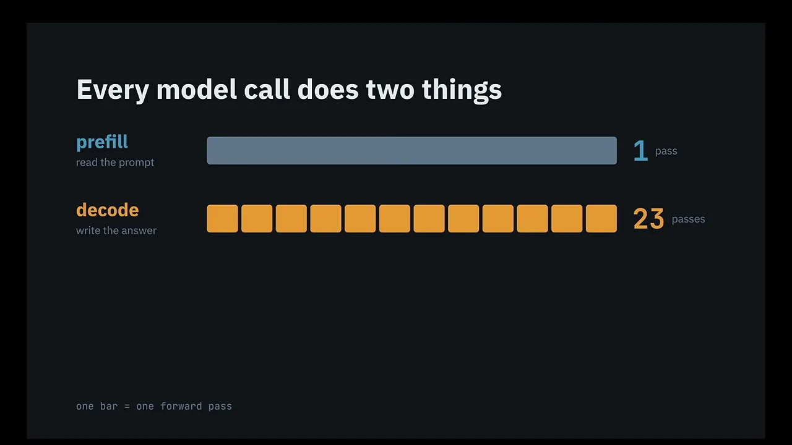
디코드에서는 첫 토큰이 나오면 그걸 입력 뒤에 붙여 다시 넣고, 다음 토큰이 나오면 또 붙여요. 500토큰 프롬프트라면 501번째, 502번째 토큰을 차례로 만들어 가는 식이에요. Jev는 이 두 번째 단계를 통째로 건너뛰어요. 문제를 처음부터 "선택지 중 무엇인가"로 정해 두고, 프리필 한 번에서 선택지 점수만 읽어요.
주황 슬라이드 아래 세 칸이 그 결과예요. 순방향 계산 1번, 생성한 토큰 0개, 형식이 틀린 출력 0개예요. 막대 오른쪽의 작은 칸 세 개가 "토큰을 쓰는 대신 선택지에 점수를 매긴다"는 뜻이에요.
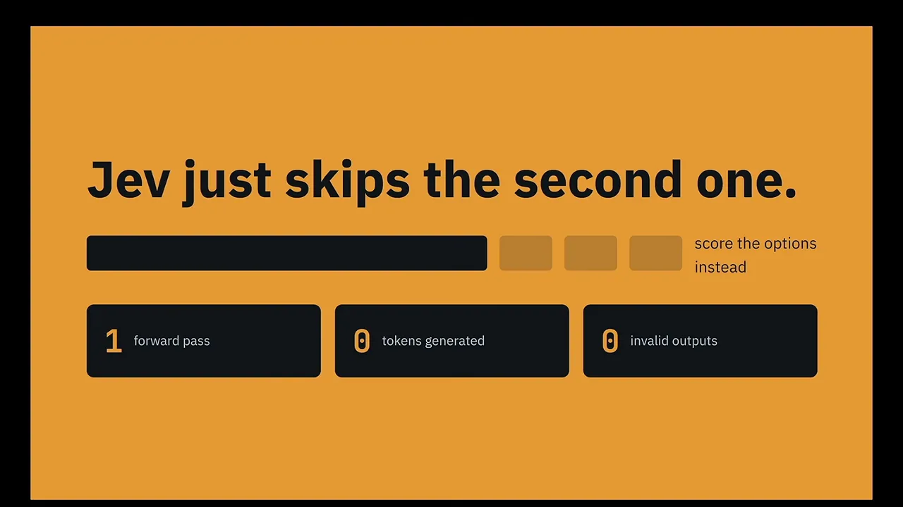
물어볼 수 있는 세 가지 모양
Jev에 던지는 질문은 세 가지예요. 발표자가 슬라이드 위에 빨간 글씨로 nominal, ordinal, binary를 덧써 놨어요. 각 카드 아래의 작은 설명도 눈여겨볼 만해요. choice는 "최대 255개 중 하나", score는 "순서 있는 단계, 답이 두 단계 사이에 떨어질 수 있음", noul은 "숫자 하나가 그대로 확신도"예요.
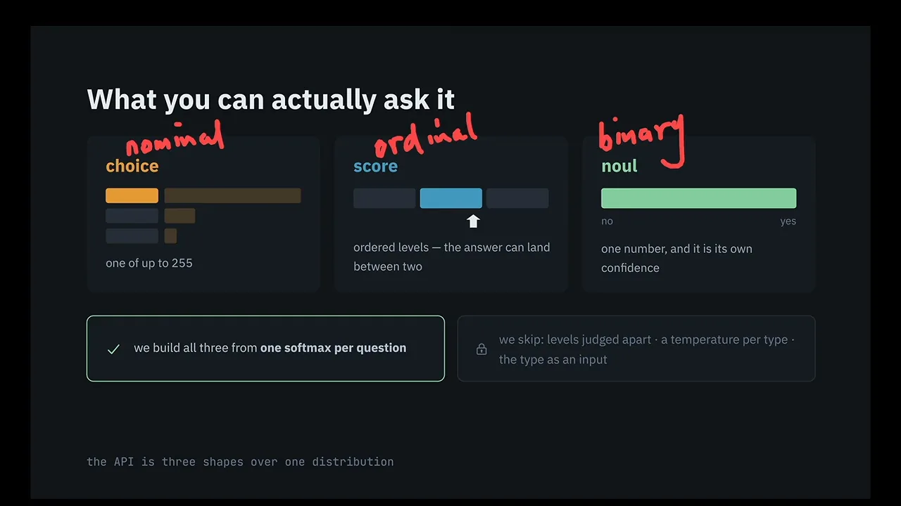
| 유형 | 성격 | 영상의 예 |
|---|---|---|
| choice | 순서 없는 선택지(명목형) | 동서남북, 어느 팀 담당인가 |
| score | 순서 있는 단계(서열형) | 차분함 · 짜증 · 매우 화남 |
| noul | 예/아니오 | 환불을 요청하나요? |
동서남북은 어느 쪽이 더 크다고 말할 수 없어요. 반면 고객 감정은 불만 정도로 줄을 세울 수 있어요. 이 차이가 나중에 학습 채점식에서 score 질문에만 RPS 항이 붙는 이유가 돼요. 오른쪽 회색 상자의 "단계별 따로 판정, 유형별 온도, 유형을 입력으로" 같은 실제 구현 세부는 강의에서 건너뛰어요.
수강 전제와 진행 순서
왼쪽 카드가 꼭 알아야 할 것, 가운데가 있으면 좋은 것, 오른쪽 자물쇠 카드가 필요 없는 것이에요. 발표자는 왼쪽 카드 중 하나라도 모르면 따라오기 어렵다고 분명히 말해요.
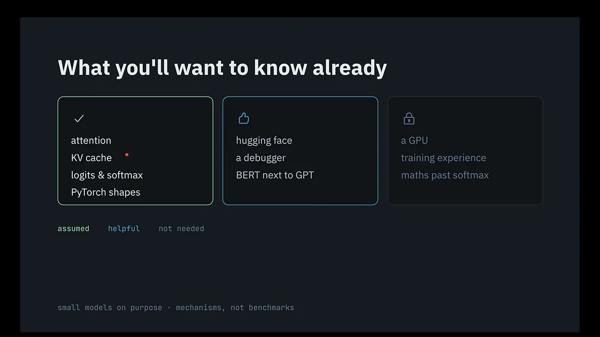
진행 순서 슬라이드는 세 단계의 입력 배치를 색으로 보여 줘요. 파랑이 문서(state), 회색이 질문, 주황이 선택지예요. 1번 보통 생성은 긴 회색 막대 뒤에 주황 칸이 줄줄이 붙어요. 2번 인코더는 질문을 앞에 두고 문서를 뒤에 둬요. 3번 디코더는 문서를 맨 앞에 두고 질문과 선택지를 번갈아 이어 붙여요.
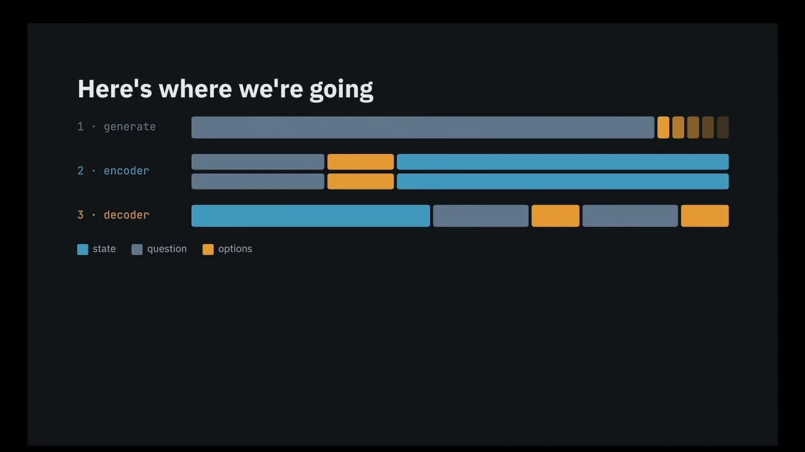
기준선: JSON을 토큰 하나씩 쓰게 하기
Jev 방식으로 가기 전에, 평범한 생성이 어떻게 도는지 디버거로 한 줄씩 따라가요. 모델은 Qwen3-0.6B로, 노트북에도 올라가는 작은 모델이에요.
상황은 사기 의심 건이에요. "카드 끝자리 4412가 3분 동안 4개국에서 9번 결제됐다. 카드 주인은 카드가 아직 주머니에 있다고 전화했다." 스키마는 세 가지 유형을 일부러 섞어 놨어요. priority(HIGH/LOW), decision(FRAUD/FRAUD_REVIEW/CLEAR), escalate(boolean)예요.
아래 캡처 오른쪽이 실제로 모델에 들어가는 프롬프트예요. <|im_start|>system 뒤에 "Output ONLY a valid JSON object" 지시와 JSON(JavaScript Object Notation) 스키마가 있어요. 그 아래 user 메시지에 상황이 들어가고, assistant 차례 끝에 {를 미리 열어 둬요. 모델이 JSON을 바로 이어 쓰게 하려는 거예요.
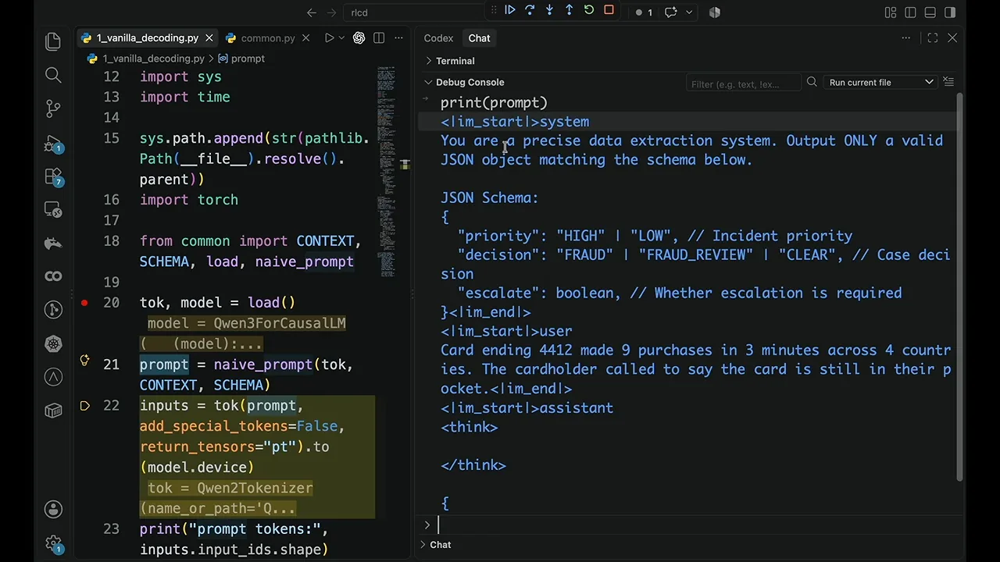
토큰 하나를 고르는 법
이 프롬프트는 약 130토큰이에요. 트랜스포머는 토큰 5개를 넣으면 예측 5개를 내놓고, 예측마다 어휘 전체에 대한 분포가 들어 있어요. 그래서 로짓 모양이 130 × 약 152K예요. 다음 토큰만 필요하니 마지막 줄만 남기고 소프트맥스를 한 뒤 argmax를 골라요. argmax의 위치가 곧 토큰 ID(Identifier)예요.
캡처의 33~38번 줄이 그 반복이에요. past_key_values=cache로 캐시를 넘기고, out.logits[0, -1]로 마지막 줄을 꺼내고, argmax()로 토큰을 골라 멈춤 토큰이면 빠져나가요.
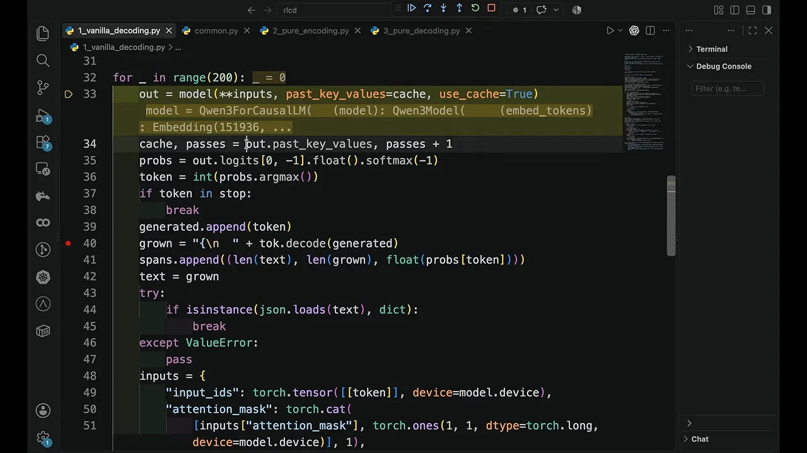
한 바퀴의 흐름을 그림으로 옮기면 이래요.
flowchart LR A["입력 토큰
(첫 바퀴 130개)"] --> B["모델 순방향
+ KV 캐시"] B --> C["로짓 130 × 152K"] C --> D["마지막 줄만
소프트맥스"] D --> E["argmax
= 새 토큰 ID"] E -->|"멈춤 토큰이 아니면
새 토큰 1개만 다시 넣기"| B
몇 바퀴 돌리면 따옴표, priority, 콜론이 차례로 붙고, 이어서 "HIGH"와 "FRAUD"가 나와요. 발표자는 ChatGPT 화면에서 글자가 하나씩 나오는 이유가 바로 이 반복이라고 짚어요. 최종 JSON은 맞게 나왔어요. 하지만 따옴표, 키 이름, 콜론까지 전부 한 토큰씩 만드느라 시간이 들었어요. 끝난 뒤에도 JSON이 제대로 닫혔는지 확인하는 뒷정리가 필요해요.
발표자는 적어도 이런 문제라면 처음부터 다르게 세워서 이 반복을 피할 수 있었다고 정리해요. 같은 문서에 질문을 여러 개 던질 때 문서 부분의 캐시를 재사용하는 요령도 여기서 미리 언급해요. 이 아이디어는 디코더 방식에서 다시 나와요.
인코더 방식: 질문 먼저, 선택지마다 MASK 토큰
첫 번째 재구성은 인코더로 해요. BERT(Bidirectional Encoder Representations from Transformers) 같은 인코더 전용 모델을 가져와(화면의 코드는 ModernBERT를 써요) 학습 없이 어디까지 되는지 보고, 안 되면 어떤 학습을 붙일지 정해요.
슬라이드 위쪽 막대가 입력 배치예요. 왼쪽 회색이 질문, 주황 두 칸이 선택지마다 붙는 [MASK] a, [MASK] b, 오른쪽 긴 파랑이 문서예요. 문서 아래에 "질문마다 다시 읽음(re-read every question)"이라고 적혀 있어요.
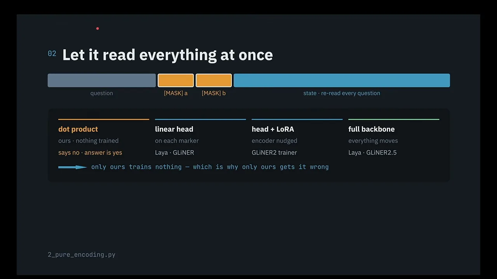
왜 질문을 앞에 둘까요
보통은 문서를 먼저 주고 질문을 나중에 해요. 여기서는 반대예요. 발표자는 어텐션이 시퀀스 앞쪽 토큰에 무게를 많이 두기 때문이라고 설명해요. 반대 순서로도 실험해 봤는데 이쪽이 더 나았다고 전해요.
그럼 문서를 앞에 두고 캐시하면 질문만 바꿔 가며 쓸 수 있지 않을까요. 발표자는 인코더에서는 안 된다고 답해요. 인코더는 양방향이라 질문 한 글자만 바뀌어도 모든 위치의 어텐션 값이 달라져요. 순서를 뒤집어도 마찬가지예요. 그래서 질문마다 문서 전체를 다시 계산해야 하고, 문서가 길고 질문이 많으면 확장성이 떨어져요. 대신 모든 토큰이 서로를 보니까 파라미터 하나하나의 효율은 가장 좋아요.
입력을 조립하는 build 함수
예시 문서는 "티켓 #8812: 같은 주문이 두 번 결제됐고, 4일째 답이 없다. 취소하고 돈을 돌려 달라, 아니면 카드사에 이의를 제기하겠다"예요. 질문은 "고객이 환불을 요청하나요?"이고 선택지는 no와 yes예요. 이해를 돕기 위해 질문을 배치로 묶지 않고 for 문으로 하나씩 처리해요.
캡처 오른쪽 디버그 콘솔의 마지막 줄이 조립 결과예요. [CLS]Is the customer asking for money back?[SEP][MASK]no[MASK]yes'까지 보여요. 코드에서는 두 가지를 기록해 둬요. 질문이 차지하는 위치 span = (1, 9)와, [MASK]가 들어간 위치 markers = [10, 12]예요.
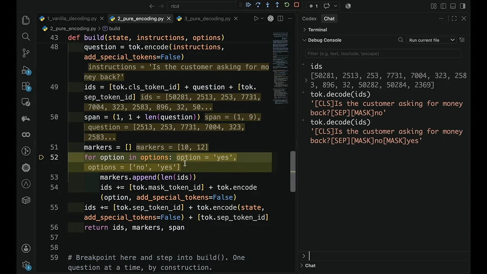
[SEP], 문서, [SEP]가 이어져요. BERT의 마스크 언어 모델 입력과 같은 꼴이에요. 영상 29:24에서 보기이 기록 덕분에 모델 출력에서 "질문 부분"과 "선택지 자리"를 정확히 골라낼 수 있어요. 모델에 넣으면 마지막 은닉 상태가 54 × 768로 나와요. 토큰 54개 각각에 768차원 벡터가 하나씩이에요.
인코더 출력에서 확률 꺼내기
이제 54 × 768 출력에서 확률을 만들어요. 재료는 두 가지예요.
- 질문 벡터: 질문 토큰 1~8번 위치의 벡터를 평균 내요(평균 풀링). 0번은
[CLS]라서 빼요. 모델이 본 질문을 가장 잘 대표하는 768 벡터 하나가 돼요. - 선택지 벡터:
[MASK]자리(10번, 12번)의 벡터 두 개예요. 모아서 2 × 768 행렬이 돼요.
발표자가 화이트보드에 그린 그림이 이 과정이에요. 맨 윗줄이 입력 순서(질문, [M]O1, [M]O2, [SEP], 문서)이고, 각 자리에서 768 벡터가 내려와요. 선택지 쪽 2×768과 질문 쪽 768×1이 화살표로 만나 2×1 확률이 돼요.
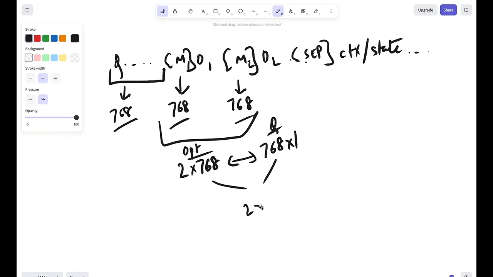
깔끔하게 다시 그리면 이래요. 선택지 행렬과 질문 벡터를 곱하면 선택지마다 스칼라가 하나씩 나오고, 그 둘에 소프트맥스를 씌워 확률로 읽어요.
당연히 틀려요. 학습을 하나도 안 한 백본이니까요. 발표자는 그래도 이 구조가 바탕이 된다고 말해요. 임베딩 자체는 품질이 높아서 신호는 다 들어 있고, 이 벡터를 확률로 읽어야 한다는 걸 모델이 모를 뿐이에요.
학습을 붙이는 세 단계
화이트보드 아래쪽에 발표자가 번호를 매겨 적어 둔 세 가지가 그 해결책이에요. 위쪽에는 첫 번째 방법을 따로 풀어 놨어요. 선택지 벡터마다 768 → 1 선형 헤드를 거쳐 스칼라를 내고, 두 스칼라가 확률이 돼요.
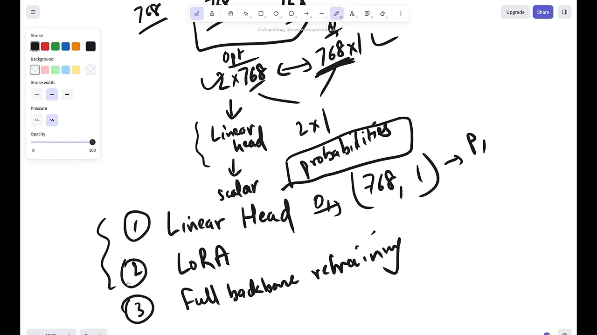
| 방법 | 무엇을 학습하나 | 슬라이드가 든 예 |
|---|---|---|
| 내적(dot product) | 아무것도 안 함. 강의 구현 | 틀림: 아니요라고 답함 |
| 선형 헤드 | [MASK]마다 붙인 768 → 1 층 | Laya · GLiNER |
| 헤드 + LoRA | 헤드와 인코더를 조금 | GLiNER2 trainer |
| 백본 전체 | 모든 가중치 | Laya · GLiNER2.5 |
슬라이드 아래 문구는 "우리 것만 아무것도 학습하지 않는다, 그래서 우리 것만 틀린다"예요. 어느 단계를 고를지는 과제의 복잡도와 투자할 수 있는 데이터 양에 달려 있어요.
디코더 방식: 문서는 한 번 읽고 캐시
디코더로도 디코드 없이 프리필 한 번에 끝낼 수 있어요. 이번에는 인코더와 정반대로 문서를 맨 앞에 둬요.
슬라이드 막대를 보면 왼쪽 절반 이상을 파란 문서가 차지하고, "한 번 읽고 캐시(read once, cached)"라고 적혀 있어요. 그 뒤로 회색 질문 1, 주황 A:, 회색 질문 2, 주황 A:가 번갈아 와요. 질문 뒤를 A:처럼 열어 두면 모델 입장에서는 자동 완성 과제가 돼요.
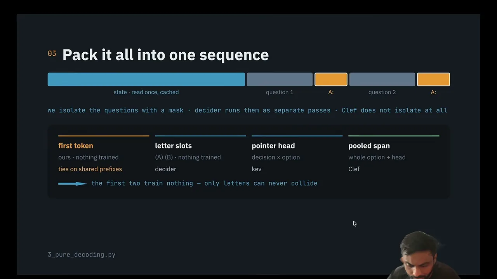
디코더는 인과 마스크라서, 앞쪽 토큰은 뒤에 무엇이 오든 계산 결과가 같아요. 그러니 문서의 KV 캐시를 한 번 만들어 두고 질문만 갈아 끼우면 돼요. 발표자는 컨텍스트가 32K이고 문서가 1K라면, 남은 31K를 질문과 선택지로 채울 수 있다고 예를 들어요.
발표자는 Jev가 문서 하나에 질문을 5,000개까지 받는다는 점을 보면 디코더 방식일 거라고 추측해요. 다만 Jev 쪽에서 공개한 게 없어서 확실하지 않다고 직접 덧붙여요.
선택지 점수를 읽는 네 가지 방법
슬라이드 아래 네 칸이 디코더 쪽 선택지예요. 각 칸 맨 아래 줄은 그 방식을 쓰는 실제 구현 이름이에요.
| 방법 | 어떻게 | 학습 | 슬라이드의 예 |
|---|---|---|---|
| 첫 토큰 | 다음 토큰 분포에서 선택지 첫 토큰의 확률만 골라요 | 없음 | 이 강의. 앞 토큰이 같으면 비김 |
| 글자 슬롯 | 선택지를 (A)(B)로 바꾸고 글자 하나만 답하게 해요 | 없음 | decider |
| 포인터 헤드 | 결정 지점 벡터 × 선택지 벡터를 헤드로 계산해요 | 헤드 | kev |
| 풀링 스팬 | 선택지 토큰 전체를 풀링하고 헤드를 붙여요 | 헤드 | Clef |
슬라이드 결론은 "앞의 둘은 학습이 없고, 글자만 절대 충돌하지 않는다"예요. 강의는 첫 토큰 방식만 구현하고, 캐시 재사용과 질문 교체에 집중해요. 발표자는 이것만으로도 충분히 어렵다고 말해요.
앞 토큰이 같은 선택지
첫 토큰 방식의 약점을 발표자가 슬라이드 위에 직접 적어 보여 줘요. "이게 맞는 질문인가?"에 선택지 ① Fraud, ② Fraud review를 붙이면, 두 선택지의 첫 토큰이 똑같아요.
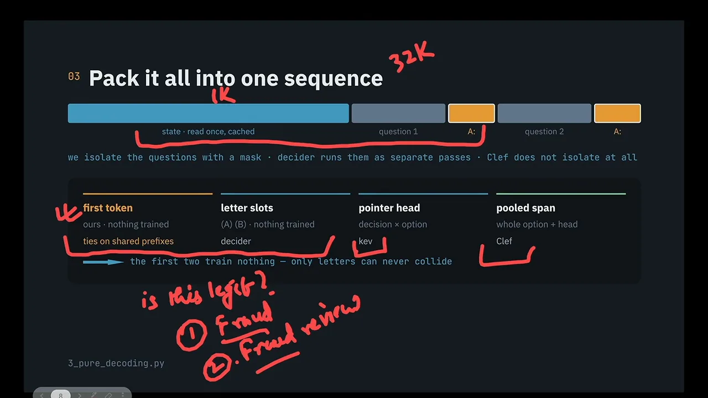
강의 구현은 이런 경우 조용히 비긴 답을 내지 않고 오류를 내요. 사용자가 선택지 이름을 바꾸게 하려는 거예요. 예를 들어 Fraud review를 그냥 review로 바꾸면 문제가 사라져요. 글자 슬롯은 A와 B로 바꾸니 처음부터 이 문제가 없고, 풀링 스팬은 선택지 전체를 보니 완전히 같은 선택지까지 구분할 여지가 있어요.
질문끼리 서로 못 보게 하는 마스크
질문 여러 개를 한 시퀀스에 넣으면 문제가 하나 생겨요. 보통 인과 마스크라면 두 번째 질문의 토큰이 첫 번째 질문을 볼 수 있어요.
발표자는 이걸 "모르는 질문으로 문맥을 오염시키는 것"이라고 불러요. 그러면 질문 순서를 바꿀 때마다 답이 달라지고, 결과를 재현할 수 없어요. 원하는 규칙은 세 가지예요.
- 문서 블록 안은 평소처럼 인과 마스크예요.
- 각 질문은 문서 전체와 자기 블록 안의 앞쪽 토큰을 봐요.
- 다른 질문의 토큰은 하나도 보지 않아요.
발표자는 문서 3토큰(S1~S3), 질문 1(Q11, Q12), 질문 2(Q21, Q22)로 화이트보드에 행렬을 그려요. 행이 지금 계산하는 토큰, 열이 볼 수 있는 토큰이에요. 동그라미 친 덩어리가 볼 수 있는 블록이고, 오른쪽 아래 Q21·Q22 줄의 Q11·Q12 칸에는 F가 적혀 있어요.
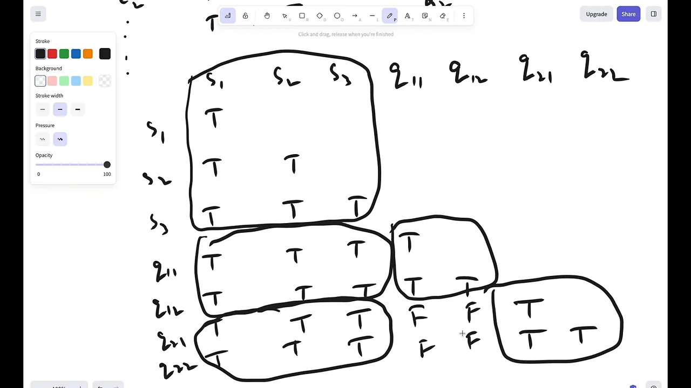
같은 행렬을 깔끔하게 다시 그렸어요. 칠한 칸이 볼 수 있는 칸(True)이에요.
발표자는 Cloudflare의 Clef가 이 격리를 하지 않는다고 보고, 질문 순서를 섞으면 결과가 달라질 텐데 이해가 안 된다고 말해요. 이 마스크를 만드는 데는 배열 조작이 좀 필요해서, 여러 구현을 둘러보기보다 이 원리 하나에 집중한다고 해요. 원리를 알면 회사마다 다른 변형도 쉽게 읽힌다는 이유예요.
디코더 구현: 캐시 재사용과 결정 지점
이제 디코더 버전을 디버거로 따라가요. 문서는 "Charged twice, want my money back."이에요. 질문은 두 개예요. "고객이 환불을 요청하나요?(yes/no)"와 "어느 팀 담당인가요?(billing/technical)"예요. 모델은 기준선과 같은 Qwen3-0.6B예요.
1단계: 문서를 한 번 프리필
문서 38토큰을 모델에 넣고 past_key_values를 받아 둬요. 이게 문서의 KV 캐시예요. 발표자가 콘솔에서 모양을 확인해요. 층이 28개이고, 층마다 키 텐서 하나와 값 텐서 하나가 있어요.
| 축 | 크기 |
|---|---|
| 층 | 28 |
| 키 / 값 | 2 |
| 배치 | 1 |
| KV 헤드 | 8 |
| 토큰 | 38 |
| 헤드 차원 | 128 |
2단계: 질문 마스크 만들기
질문 두 개와 선택지를 합치면 35토큰이에요. 토큰마다 몇 번째 질문인지 적은 segments(1, 1, …, 2, 2, …)를 만들고, 마스크는 세 줄로 만들어요.
causal—arange를 자기 전치와>=로 비교해 보통 인과 마스크를 만들어요.same_question—seg를 자기 전치와==로 비교해 같은 질문끼리만 True인 행렬을 만들어요.visible— 앞에 문서 38칸을 전부 True로 붙이고, 뒤에same_question & causal을 이어 붙여요.
캡처의 284~288번 줄이 정확히 이 세 단계예요. 오른쪽 콘솔에는 causal 텐서가 찍혀 있어요.
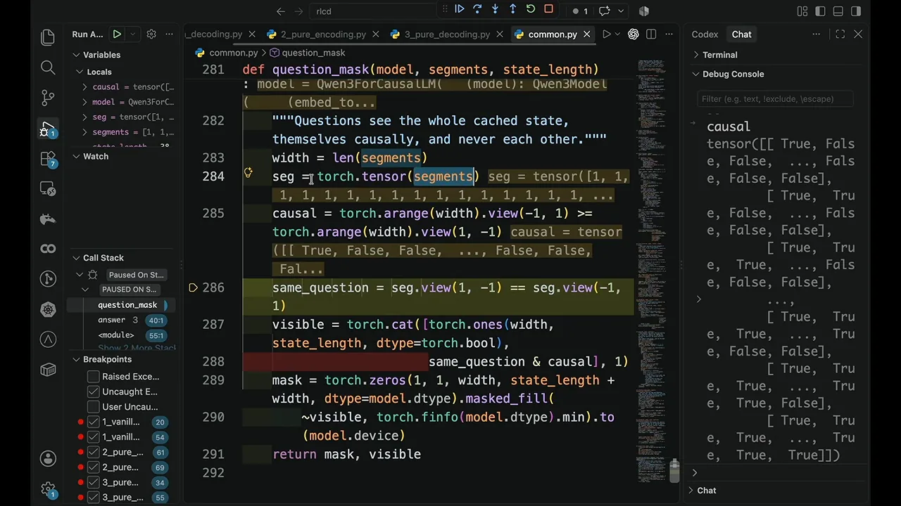
visible의 모양은 35 × 73이에요. 행은 새로 넣는 질문 토큰 35개, 열은 문서 38개 + 질문 35개예요. 문서끼리의 위쪽 블록은 이미 캐시에 있으니 필요 없어요. 콘솔에서 보면 첫 몇 줄은 앞쪽이 True, 끝쪽이 False이고, 마지막 줄은 끝까지 True예요.
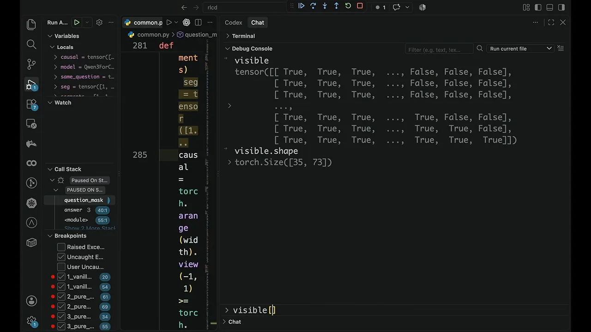
3단계: 한 번의 순방향 계산
모델에는 질문 토큰 ID, 방금 만든 마스크, 문서 캐시, 그리고 위치 ID를 같이 넘겨요. 위치 ID는 38부터 시작해요. 캐시에 이미 38토큰이 들어 있으니, 새 토큰의 위치를 그 뒤로 매겨야 RoPE 위치 임베딩이 맞게 계산돼요.
로짓은 35 × 151,936으로 나와요. 토큰마다 어휘 전체의 분포예요. 이 중 필요한 건 각 질문이 끝나는 결정 지점(18번, 34번) 두 줄뿐이에요. 그 줄에서 후보 토큰의 로짓만 골라 소프트맥스를 해요.
| 질문 | 후보 토큰 ID | 결과 |
|---|---|---|
| 환불을 요청하나요? | no 902 · yes 9834 | yes 95% |
| 어느 팀 담당인가요? | billing 33531 · technical 10916 | billing 97%, technical 약 2.5% |
캡처의 50번 줄이 그 계산이에요. logits[decision][torch.tensor(option_ids)]로 후보만 고른 뒤 소프트맥스를 해요. 오른쪽 콘솔을 보면 질문이 Q: … - no - yes A 꼴로 들어가 있고, 후보 토큰은 [[902, 9834], [33531, 10916]]이에요. 첫 질문은 18번 자리에서 끝나요.
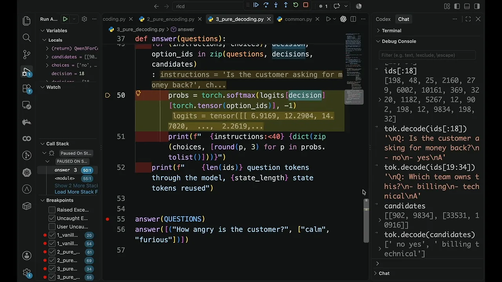
인코더와 달리 학습 없이 바로 맞았어요. 발표자가 보여 주고 싶었던 디코더의 장점은 그다음이에요. 코드 끝에 score형 질문 "고객이 얼마나 화났나요?(calm/furious)"를 하나 더 붙여 놨는데, 문서는 다시 계산하지 않아요. 질문을 더 붙이거나 바꾸거나, 사용자와 대화하며 하나씩 물어도 문서 캐시는 그대로예요.
남은 약점: 앞 토큰 충돌
학습 이야기로 넘어가기 전에 발표자가 정리한 슬라이드예요. 왼쪽 막대에서 FRAUD와 FRAUD_REVIEW의 첫 칸(읽는 유일한 토큰)이 같은 주황색이에요. 오른쪽 상자는 "같은 숫자를 두 번 읽으니 비긴 걸 깰 수 없다"는 뜻이에요.
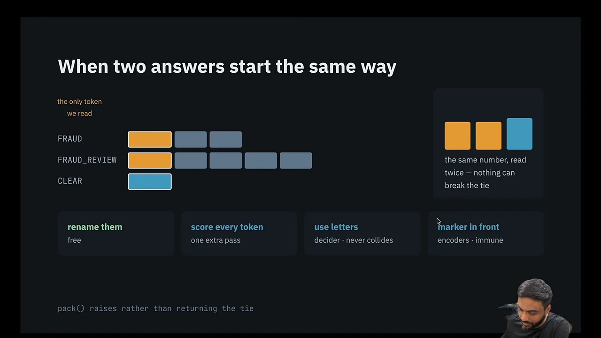
토큰마다 점수를 매기려면 디코드 단계를 몇 번 더 돌린 뒤 평균 풀링으로 점수를 내야 해요. 인코더는 [MASK]가 선택지 앞 자리를 차지하고 있어서 위치로 구분돼요. 그래서 앞 토큰이 겹치는 문제는 디코더에만 있어요.
학습: 교사 확률을 따라가는 GRPO와 채점식
마지막 덤으로 학습을 다뤄요. 코드나 데이터셋은 보여 주지 않고, 학습 한 스텝을 숫자로 풀어 RLCD(Reinforcement Learning for Calibrated Decisions)의 감을 잡게 해요. GitHub에 올릴 보너스 스크립트에는 합성 데이터로 돌리는 학습 코드가 들어간다고 해요.
교사-학생 증류
발표자는 이런 학습이 결국 교사-학생 증류라고 정리해요. 라벨이 붙은 데이터가 있거나, 확률을 줄 수 있는 교사 모델이 있으면 돼요.
슬라이드 위쪽 표가 출발점이에요. "어느 팀 담당인가"에 교사는 billing 0.70, technical 0.20, account 0.10을 줘요. 학생의 원점수(소프트맥스 전, 선형 헤드에서 나온 값)는 1.00, 0.80, 0.20이고, 소프트맥스를 하면 0.441, 0.361, 0.198이에요. 순위는 교사와 같지만, 분포를 교사에 더 가깝게 만들고 싶어요.
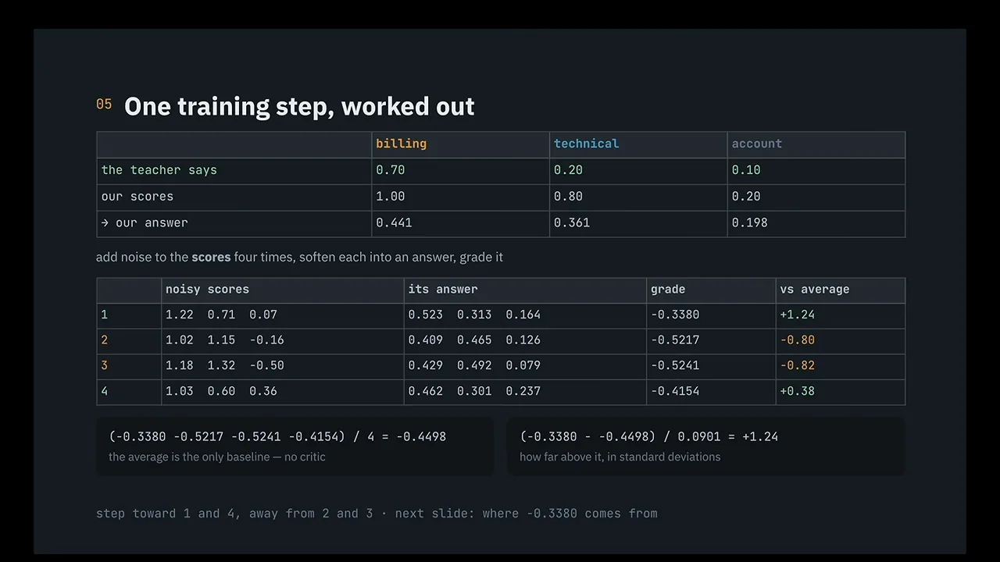
잡음으로 만든 경로 네 개와 GRPO
GRPO는 강화학습 방법이에요. 원래는 같은 문제에 답을 여러 번 생성해 채점하고, 평균보다 나은 답을 더 자주 내도록 밀어 줘요. 평균을 뺀 나머지가 어드밴티지예요. 그런데 이 모델은 생성을 하지 않으니 경로가 하나뿐이에요. 그래서 원점수에 무작위 잡음을 네 번 섞어 경로를 직접 만들어요.
| 경로 | 잡음 섞은 점수 | 그 답 | 채점 | 어드밴티지 |
|---|---|---|---|---|
| 1 | 1.22 · 0.71 · 0.07 | 0.523 · 0.313 · 0.164 | -0.3380 | +1.24 |
| 2 | 1.02 · 1.15 · -0.16 | 0.409 · 0.465 · 0.126 | -0.5217 | -0.80 |
| 3 | 1.18 · 1.32 · -0.50 | 0.429 · 0.492 · 0.079 | -0.5241 | -0.82 |
| 4 | 1.03 · 0.60 · 0.36 | 0.462 · 0.301 · 0.237 | -0.4154 | +0.38 |
채점 네 개의 평균은 -0.4498이에요. 슬라이드는 이걸 "유일한 기준선, 비평가(critic) 없음"이라고 적어요. 1번은 (-0.3380 − (-0.4498)) ÷ 0.0901 = +1.24예요. 0.0901은 네 채점의 표준편차예요.
왜 1번이 가장 높을까요. billing을 0.441에서 0.523으로 올리면서 순위를 그대로 지켜서, 교사 분포 쪽으로 가장 많이 다가갔어요. 2번과 3번은 technical이 billing을 앞질러 순위가 뒤집혔어요. 그래서 업데이트는 1번과 4번 쪽으로, 2번과 3번에서 멀어지는 방향으로 가요.
채점 -0.3380은 어디서 나왔을까요
채점은 두 점수의 합이에요. 슬라이드 왼쪽 주황 표가 로그 점수, 오른쪽 파란 표가 구면 점수예요.
- 로그 점수 — "교사가 확률을 둔 곳에 너도 뒀니?" 학생 확률의 로그(ln q)에 교사 확률(t)을 곱해 더해요. 작은 q는 비싸요. 0.164는 1.805, 0.523은 0.648만큼 깎여요. 합은 -0.8669예요.
- 구면 점수 — "답 전체가 교사와 같은 방향이니?" 교사 확률로 가중한 학생 확률 합 0.4450을 학생 벡터 길이 0.6311로 나눠 0.7052, 여기에 0.75를 곱해 0.5289예요. 0과 1 사이로 묶여 있어서 한 샘플이 그룹 전체를 휘두르지 못해요.
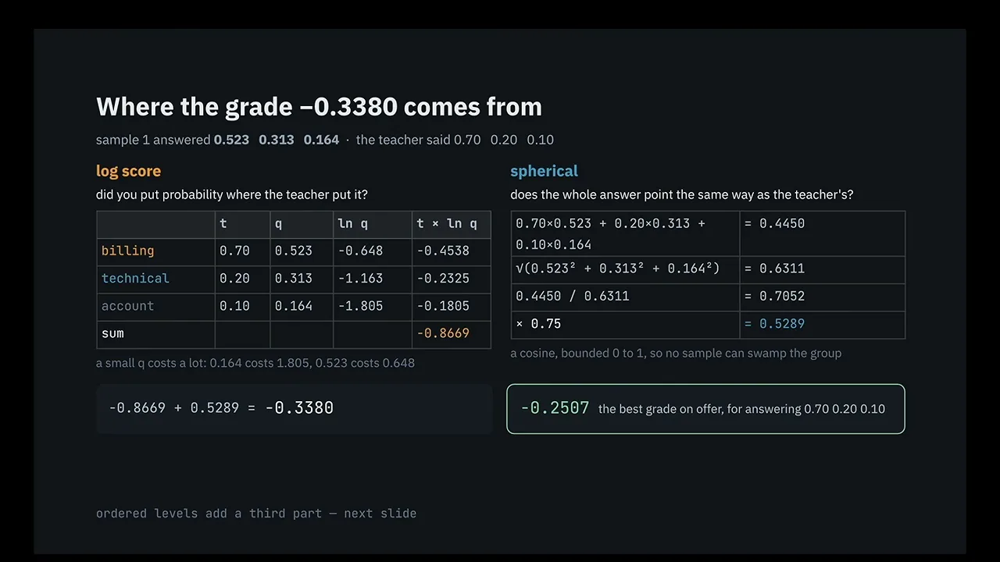
아래 계산기에서 학생의 원점수를 바꿔 보면 이 두 점수가 어떻게 움직이는지 볼 수 있어요. 교사 확률은 슬라이드의 0.70 · 0.20 · 0.10으로 고정했어요.
학생 확률 -
로그 점수 -
0.75 × 구면 점수 -
채점 - (최고점 -0.2507)
- 처음 값(경로 1의 1.22 · 0.71 · 0.07)에서 채점이 슬라이드와 같은 -0.3380 근처인지 보세요.
- billing 점수를 -1까지 내려 보세요. 교사가 0.70을 둔 칸의 확률이 작아지면 로그 점수가 크게 깎여서 '작은 q는 비싸다'는 말이 보여요.
- technical을 billing보다 높게 올려 순위를 뒤집어 보세요. 경로 2·3처럼 채점이 -0.52 언저리로 떨어져요.
- 원점수를 1.95 · 0.70 · 0.00 근처로 맞춰 보세요. 학생 확률이 교사와 같아지면서 채점이 최고점 -0.2507에 다가가요.
순서 있는 질문에만 붙는 RPS
score 질문에는 세 번째 항이 붙어요. 단계가 차분함 · 짜증 · 매우 화남이고 정답이 "매우 화남"이라고 해요. "짜증"이라고 답한 모델이 "차분함"이라고 답한 모델보다 덜 틀렸어요. 그런데 로그 점수는 정답 칸에 둔 확률(둘 다 0.1)만 보니까 둘 다 -2.303으로 같아요.
슬라이드의 running total 열이 해결책이에요. 확률을 앞에서부터 누적하면 짜증은 0.1 · 0.9 · 1.0, 차분함은 0.8 · 0.9 · 1.0이에요. 정답의 누적 0.0 · 0.0 · 1.0과의 차이를 제곱해 k − 1개(여기선 2개)로 평균 낸 값이 RPS예요. 짜증은 0.410, 차분함은 0.725로 갈려요.
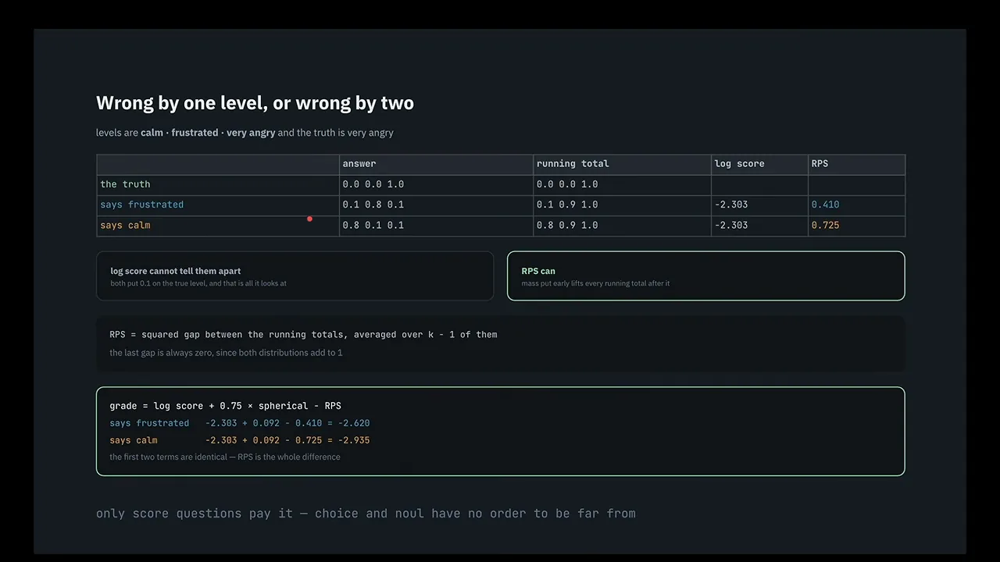
그래서 최종 채점은 로그 점수 + 0.75 × 구면 점수 − RPS예요. 슬라이드 맨 아래 문구대로, choice와 noul은 "멀고 가까움"을 따질 순서가 없어 RPS를 내지 않아요.
최종 손실
발표자는 최종 손실을 교차 엔트로피 전체에 이 강화학습 손실을 더한 것으로 정리해요. 강화학습 쪽은 잡음으로 만든 GRPO 경로들을 위 채점으로 평가해서 나와요. 이 손실을 역전파할 대상은 선형 헤드만, LoRA, 백본 전체 중에서 정확도 목표와 예산에 맞게 골라요.
인코더냐 디코더냐
마지막 슬라이드는 두 구현을 아홉 가지 기준으로 비교해요. 왼쪽이 기준, 가운데 파란 열이 인코더, 오른쪽 주황 열이 디코더예요. 초록 글씨가 그쪽이 유리한 칸이에요.
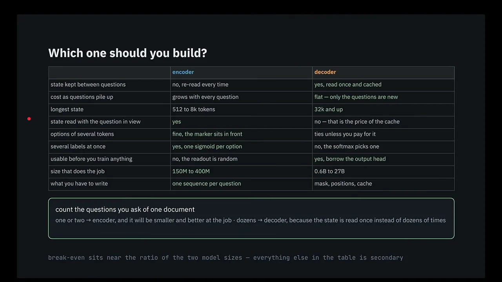
| 기준 | 인코더 | 디코더 |
|---|---|---|
| 질문 사이에 문서 유지 | 아니요, 매번 다시 읽음 | 예, 한 번 읽고 캐시 |
| 질문이 늘 때 비용 | 질문마다 늘어남 | 거의 그대로, 질문만 새로 계산 |
| 가장 긴 문서 | 512~8K 토큰 | 32K 이상 |
| 문서를 읽을 때 질문이 보이나 | 예 | 아니요, 캐시의 대가 |
| 여러 토큰짜리 선택지 | 괜찮음, 마커가 앞에 있음 | 비용을 더 내지 않으면 비김 |
| 라벨 여러 개 동시에 | 예, 선택지마다 시그모이드 | 아니요, 소프트맥스는 하나만 고름 |
| 학습 전에 쓸 수 있나 | 아니요, 출력이 무작위 | 예, 출력 헤드를 빌려 씀 |
| 필요한 모델 크기 | 150M~400M | 0.6B~27B |
| 직접 짜야 하는 것 | 질문마다 시퀀스 하나 | 마스크, 위치, 캐시 |
발표자의 설명을 몇 줄 덧붙이면 이래요. 질문이 많고 문서가 유한하면 디코더가 맞아요. 문서가 길어도 디코더예요. 반대로 인코더는 양방향이라 문서를 읽으면서 질문을 볼 수 있어서 늘 약간 앞서요. 같은 일을 하는 데 400M 인코더라면 디코더는 더 큰 모델이 필요해요. 디코더에서 여러 라벨을 동시에 고르려면 구조를 조금 손봐야 해요.
슬라이드의 결론은 "한 문서에 던지는 질문 수를 세라"예요. 한두 개면 인코더가 더 작고 더 잘해요. 수십 개면 문서를 수십 번이 아니라 한 번만 읽는 디코더가 나아요. 손익분기는 두 모델 크기의 비율 근처이고, 표의 나머지는 부차적이라고 적혀 있어요. 메모리가 빠듯하거나 속도가 중요하다면 이 기준들을 자기 도메인과 문제에 맞춰 따져 봐야 해요.